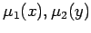

Inhalt Index DeskTop Bronstein

 Algebra und Diskrete Mathematik Fuzzy-Logik Fuzzy-wertige Relationen Fuzzy-Relationen
Algebra und Diskrete Mathematik Fuzzy-Logik Fuzzy-wertige Relationen Fuzzy-Relationen


| (5.392a) |
mit
| (5.392b) |
Das Ergebnis der Verknüpfung ist eine Fuzzy-Relation R auf der Kreuzproduktmenge (kartesisches Produkt der Fuzzy-Mengen) G mit Sind X und Y diskrete endliche Mengen und somit  als Vektoren darstellbar, dann gilt:
| (5.393) |
Der Verknüpfungsoperator steht nicht für das übliche Matrizenprodukt, die Produktbildung wird durch die komponentenweise min-Operation und die Addition durch die komponentenweise max-Operation ersetzt.
Der Grad des Zutreffens einer inversen Relation R-1 auf die Objekte (x,y) ist also stets gleich dem Grad des Zutreffens von R auf die Objekte
| (5.394) |
Eine entsprechende Berechnungsvorschrift für die ODER-Verknüpfung durch die max-Operation ist gegeben durch:
| (5.395) |